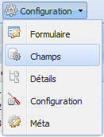
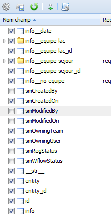

Option : Champs¶
Figure 20 : option champs du menu.
L’option champs permet d’activer/désactiver les champs de la définition de la meta. Toutes les vues ont sous-ensemble des champs activés par défaut, mais il est possible de les activer ou les désactiver dans la définition de la meta. Les absorptions des champs qui se retrouvent dans les entités qui ont une relation avec l’entité principale ( qui prendre le rôle de parent ) se font dans cette même fenêtre. Il est possible aussi d’activer des champs de type gestion comme la date de la dernière modification, la date de création ou modifié par.
Activer ou désactiver les champs¶
Figure 21 : liste de champs.
Pour activer ou désactiver les champs, cochez ou décochez la caisse située à gauche du champ. L’icône du dossier signifie que d’autres champs se trouvent à l’intérieur du dossier. Pour montrer les champs d’un dossier, cliquez sur le triangle blanc situé à gauche de l’icône dossier.
Ensuite, enregistrez les changements en cliquant sur le bouton  Mettre à jour la méta.
Mettre à jour la méta.